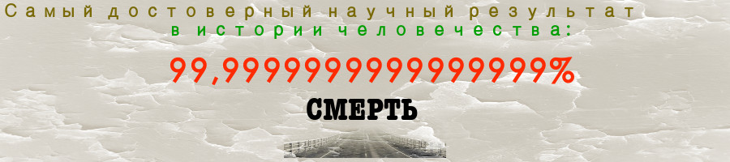

Смерть
Дата: 7.4.2020

I. Смерть — неизбежный результат нашей жизни, эмпирический эксперимент с практическим выходом в 100% [1]. Кто бы ни жил — умрет. Смерть — событие прекращения физического существования, известного нами как "биологическая жизни". Никому не удавалось избежать такого прекращения жизни, физической смерти.
Следовательно, смерть является одним из самых достоверных эмпирических результатов. В своей настойчивости данный результат превосходит многие вещи, рассматриваемые неизменными: солнце может не подняться завтра снова (проблема индукции), но мы умрем.
II. Смерть безусловно связана с жизнью. Не бывает смерти без ее соединения с жизнью. И хотя жизнь может быть мыслима как вечная (загробная жизнь, Рай), смерть приходит лишь когда имеется жизнь, форма существования. Таким образом, жизнь является предпосылкой для смерти, необходимым условием для нее.
Итак, что же такое (мирская) жизнь? Это смерть. Конечно же, жизнь не определяется полностью через смерть. Однако смерть является необходимым определением жизни. Другие вещи определяют жизнь, и даже может быть, необходимым образом, но, так как она прекращает жизнь, смерть, мы полагаем, является наиважнейшей частью определения жизни.
Так что же такое есть твоя жизнь? Это смерть. Возможно, это не самое первое, что приходит на твой ум, дорогой читатель, когда тебе задают подобный вопрос.
Страдание растет, и больной не успеет оглянуться, как уже сознает, что то, что он принимал за недомогание, есть то, что для него значительнее всего в мире, что это — смерть (Лев Толстой, Исповедь).

III. Так не трать своего времени, полагая, что какая-нибудь идея (технология), некая простая вера сделает тебя недосягаемым для смерти. Так нет же, большинство идей канут в небытие со временем (другой достоверный эмпирический результат), но смерть останется. Начни мыслить этот нехитрый вывод уже сейчас!
Мы все неизлечимо больные. Вопрос лишь в том, сколько времени нам еще осталось жить (популярный кинофильм).
[1] Из-за конечной выборки и невозможности предсказать будущее (возможно, кто-нибудь не умрет?) мы не можешь достичь 100% в теории, но на практике это одно и то же.